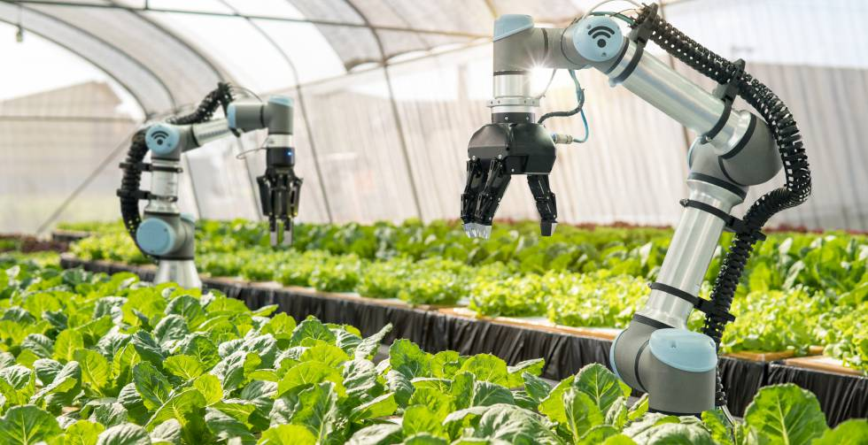

Desarrollo sustentable de la mano de la inteligencia artificial y la robótica
La Inteligencia Artificial puede contribuir al desarrollo sostenible ayudando a predecir errores y a planificar mejor los Objetivos de Desarrollo Sustentable
Combinar la IA con el desarrollo sostenible ayudará a todos los sectores a diseñar un planeta mejor, satisfaciendo las necesidades actuales sin comprometer a las generaciones futuras debido al cambio climático u otros grandes desafíos.
La alianza entre Inteligencia Artificial y economía sustentable
La IA puede ayudar a potenciar la eficiencia de las energías renovables. Las empresas ya están empleando esta tecnología para conocer la disponibilidad diaria de las instalaciones encargadas de generar energía, para predecir la producción que se podrá generar en los próximos días y, por último, para prevenir y diagnosticar averías.
Más allá del sector energético, son muchas las industrias y negocios que pueden mejorar gracias a la IA al mismo tiempo que favorecen al planeta. En la agricultura, por ejemplo, se aplica para conseguir que el riego y la fertilización sean más eficientes. Gracias a los sensores de humedad, temperatura y fertilización las Inteligencias Artificiales son capaces de predecir las necesidades de los cultivos.
